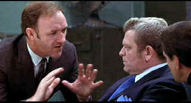

| French
Connection (SE)/A,A |
| Fox/1971/104/ANA 1.85 |
The French Connection is one of the great procedural cop flicks, with a terrific emphasis on
action. The several chases are outstanding. The car chasing the elevated subway train is most
memorable and familiar to people, but the beautiful subtlety when narcotics cop Popeye Doyle
stalks the trail of drug lord Alain Charnier is an absolute ballet of movement. Graceful, fitful,
witty, and tense, director William Friedkin’s visual rhythms are matched in perfect harmony by
the Don Ellis score. These subway scenes are superb, especially as a compliment to the car/train
chase.
 |
| A demonstrative Doyle pleads his
case. ©Fox |
The French Connection is based on an
actual case that took place in New York City during the 1960s. Real life cops Eddie Egan and Sonny
Grosso were the models for Jimmy Popeye Doyle and Buddy Russo. The narcotics detectives are ever on
the look for the big bust and when they get wind of the pending arrival of a huge heroine shipment,
the scent is strong and the chase is on. The opening Marseilles scenes serve the duo purpose of
introducing the drug principals, establishing their ruthlessness, and tracing the path of heroine
from Marseilles to
New York. Alain Charnier is the
sophisticated head of the drug ring, a wonderful contrast to the rough-edged Doyle. Marcel Bozzuffi
is frightening as Charnier's enforcer Nicoli.
Gene Hackman is amazing as Jimmy
"Popeye" Doyle. Hackman chews gum with an abrasive arrogance. His style is sleazy. He’s
a cop dealing in dirty dealings. He right at home in this milieu. The force of Hackman’s on
screen charisma prevents the often-despicable Doyle from sinking into pool disreputable action.
Above all, Hackman’s Doyle wants to get his man. It’s not the law, not the breaking of the law,
it’s the chase, the one on one game of schoolyard ball and bullying. Fernando Rey brings suave erudition
to Alain Charnier. Rey moves like a seasoned mouse survivor, sniffing adversaries in the wind.
Friedkin reveals in the audio commentary that the casting of Rey was a fortuitous accident and it
definitely adds an interesting layer to the film. Roy Scheider lends his usual screen realism to
Russo and Tony Lo Bianco is an excellent choice as a hungry small timer seizing the opportunity for
the big score. Friedkin provides a nod to reality by casting detectives Egan and Grosso ins
supporting roles.
Friedkin is brilliant in moving The French
Connection at an unrushed pace that still feels relentless. His chase choreography is
astounding. Choosing a documentary look for Owen Roizman’s cinematography steps up the
excitement and veracity of the film. It's a sharp, lean script with numerous outstanding set
pieces. Perhaps the film ends with a jarring abruptness, but it leaves you breathless.
The French Connection won a Best Actor Oscar© for Gene Hackman,
Best Picture, Best Director, Best Film Editing and Best Screenplay for Ernest Tidyman.
I have never seen The
French Connection looking so perfect. The DVD I watched captures the feel of Roizman’s cool,
raw palette of color and hand held camera immediacy. Grain is tight and consistent. The image is
very sharp. There's no hint of edginess. Great yellows on the New York City cabs, moody sunlight
streaking through the elevated tracks and the red of Popeye's Santa suit are presented with happy
accuracy. Black levels are very good. The image is always stable. The newly remixed Dolby
Digital 5:1 surround is effective in catching the excitement of the change and the beat of the
city.
The special edition
Friedkin's commentary
is cool, collected, sharp and fresh. The director shares interesting details of the actual heroine
world contrasted with aspects of the production. The specific commentary seldom digresses for more
than a few moments. But Friedkin is always open with comments like "We never really had a
script frankly." A second commentary by Gene Hackman and Roy Scheider is is produced
from two interviews conducted with the actors sharing their memories of the production. Hackman's
begins at the opening and runs through Chapter 9. Scheider's commentary begins at chapter 18 and
runs into chapter 24. Each runs without interruption. On a second disc two documentaries about the
making of The French Connection are presented, one produced by the BBC and another
especially for this DVD special edition. Seven deleted scenes are included that are in rough shape,
but a unearthed treasure. Each is well done and you can see how inclusion of a couple of them,
wonderful character scenes of Doyle, might have painted too dark an image, undermining the
relatively delicate good will that Doyle maintains. The scenes can be watched with or without
introductions by William Friedkin.
The French Connection 2 disc special edition is available individually or
packaged together with The French Connection II.
|
|
|
|

Selections from the Feature Archive include articles on
Akira Kurosawa, Blonde Bimbos,
Frank
Darabont, Steven Culp,
John
Herzfeld or Vietnam: The
Hollywood Pariah, and many more.... Director Walks the Wire
Balanced by an armor of movie lore and filmmaking daring, director John Herzfeld is comfortable
walking the high wire. Check out this interview by Stu Kobak.

The
Movie Poster Archive includes extensive poster images from the films of stars like Susan Hayward,
Kirk Douglas, Katharine Hepburn and many more. Our featured star is Gregory Peck

A Star is Born/A,B

Judy Garland is brilliant in the great Hollywood tale of one star on the rise and another
sliding into the abyss. James Mason is wonderful alongside Judy.

Need a daily fix of movie
quotes. Reel Quotes Newsletter has the answer. Click on the Reel Quotes symbol for more.

 Have you visited Home Theater
Talk lately? One of the friendliest places on the Net for Home Theater and DVD discussion, you
can get help for installation problems or simply share your opinions with other Vidiots. Have you visited Home Theater
Talk lately? One of the friendliest places on the Net for Home Theater and DVD discussion, you
can get help for installation problems or simply share your opinions with other Vidiots.

The AV
Science Forum provides great feedback on the latest home theater equipment with a wide range of
opinions. Outstanding home theater resource.
City of
Industry/B+,B+

A heist delivered in simple strokes and sudden fury. Harvey Keitel
is relentless.

I just love to watch the FBI Warning and that isn't enough, I am
treated to a graphic designer's wet logo dream.
FBI Warning/
Logo Wars
|